要完成本章节的实验，大概需要 10 分钟。
如果在我们的文字描述和截图中均未涉及的选项或者页面，取默认值即可。
本章节内容主要是部署一个关系型数据库（RDS，MySQL 5.7），并导入对应数据。
RDS是AWS云上的数据库平台服务，包括自主研发的Aurora，也包括基于MySQL/MariaDB/Oracle/SQL Server/PostgreSQL等不同引擎的关系型数据库，此处我们部署的RDS（MySQL 5.7）主要用于Lab2使用。
通过如下方式打开RDS控制台 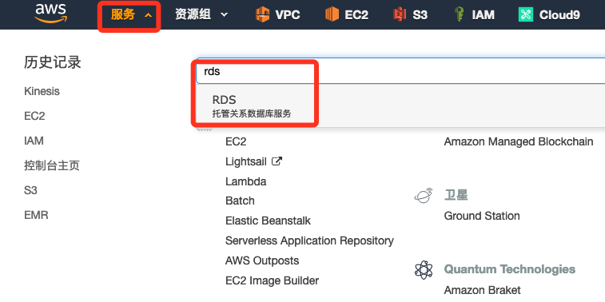
选择左侧菜单“参数组”，然后点击右侧“创建参数组” 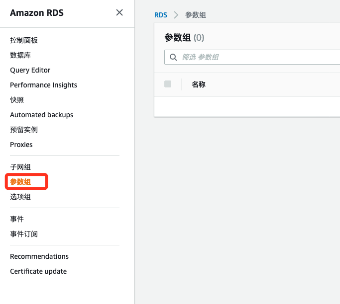
选择参数组系列为“mysql5.7”，然后输入对应的名字和描述，点击“创建”即可 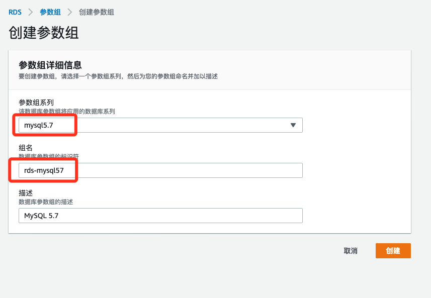
创建完毕后，点击参数组名字后打开刚才创建的参数组 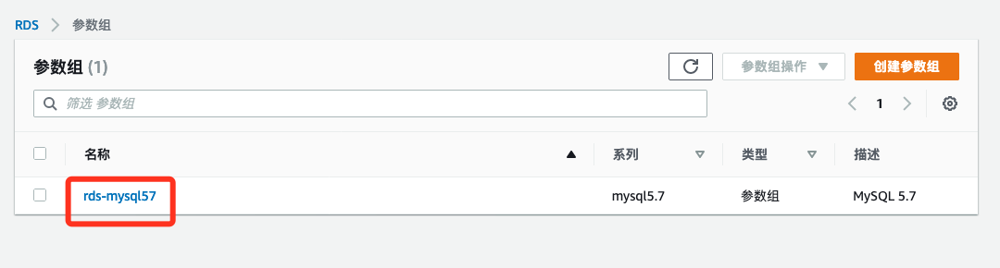
在参数那里输入character_，并选择“编辑参数”
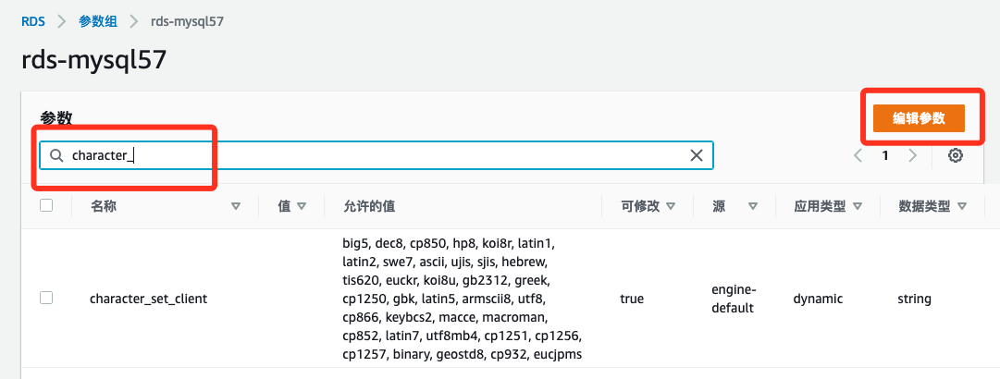
因为我们要在命令行操作中文内容的记录，所以需要修改数据库的编码，否则容易出现乱码的问题。此处我们把所有能修改的“值”全部改成utf8mb4，并点击“保存更改”即可
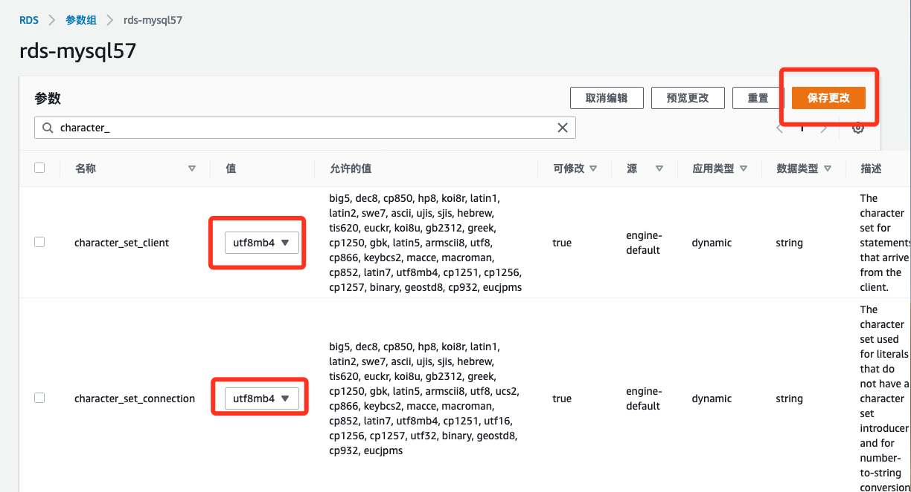
选择左侧菜单“选项组”，然后点击右侧“创建组” 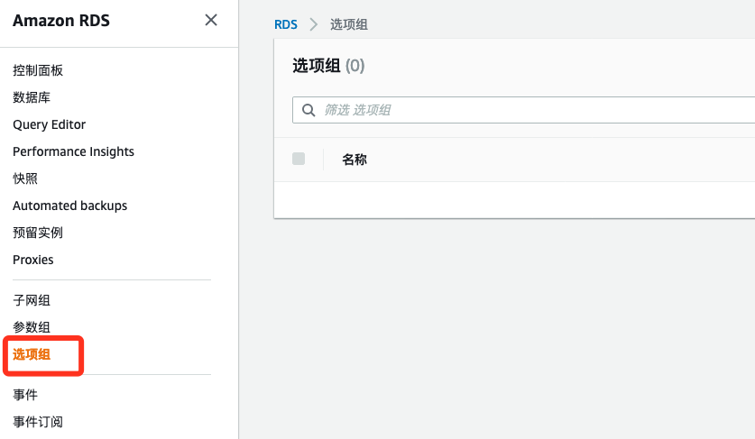
输入对应的名字，备注，引擎和版本后保存，即可 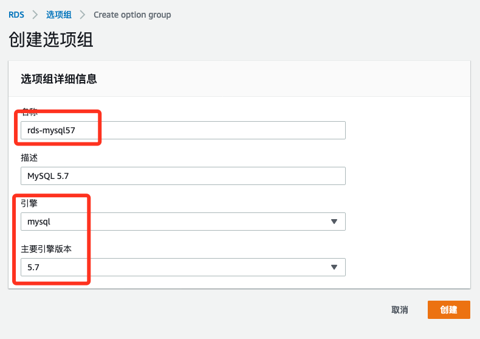
选择左侧菜单“数据库”，然后点击右侧“创建数据库” 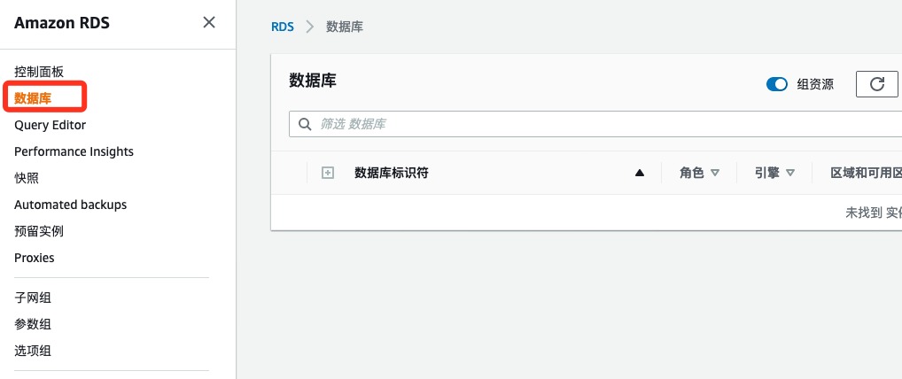
接下来选择数据库的引擎，版本和模板，如截图所示 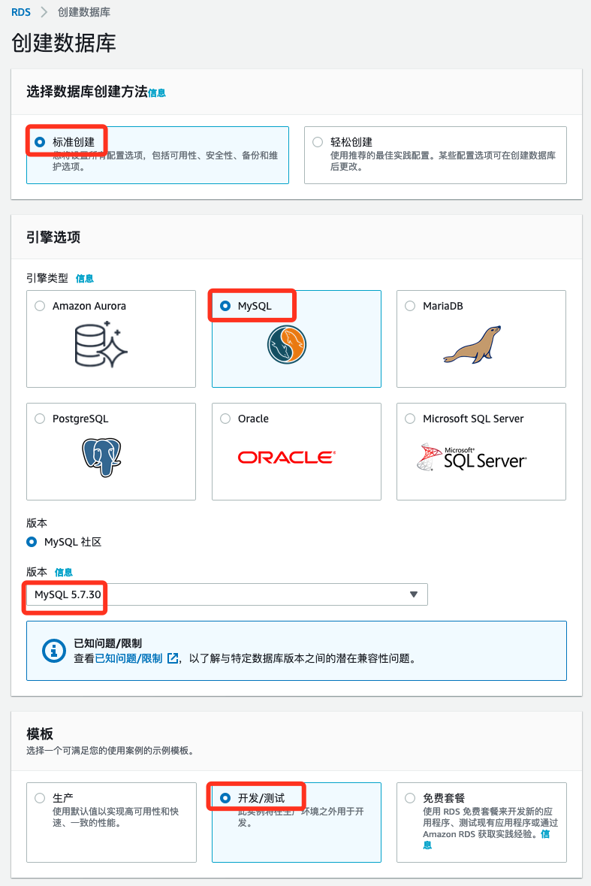
接下来设置数据库实例名称，管理员名称和密码（此处为：QazWsx2020，可自定义，主要是自己要记住别忘记）以及选择数据库类型
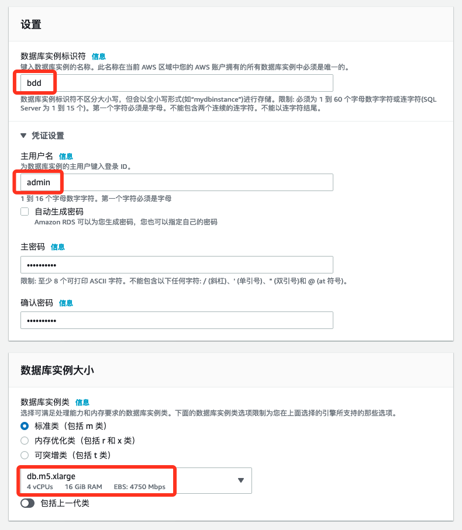
存储，可用性和网络连接选默认值即可 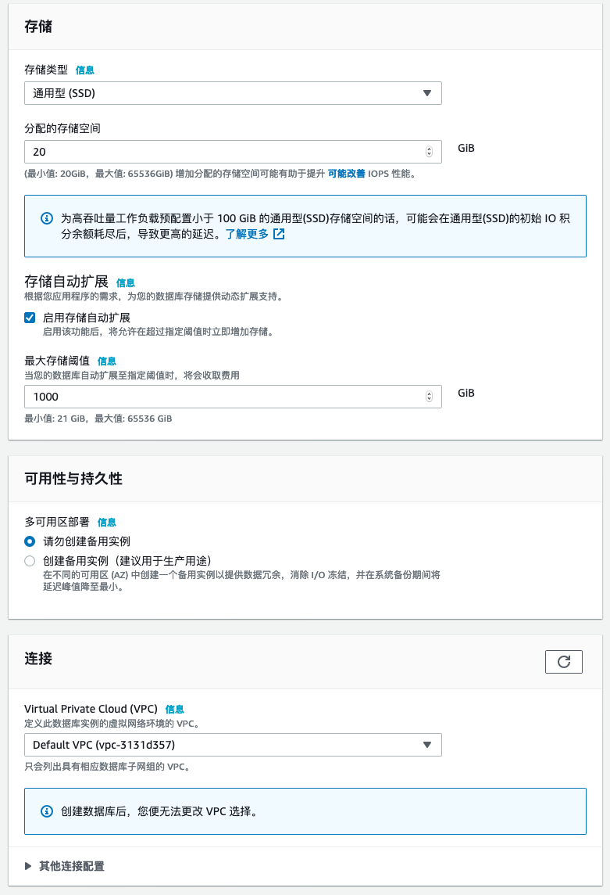
数据库使用“密码身份认证”方式，点开“其他配置”，输入数据库名字（此处为bdd），选择刚才创建的“参数组”和“选项组”，其他全部默认，拉到最下面点击“创建数据库”即可 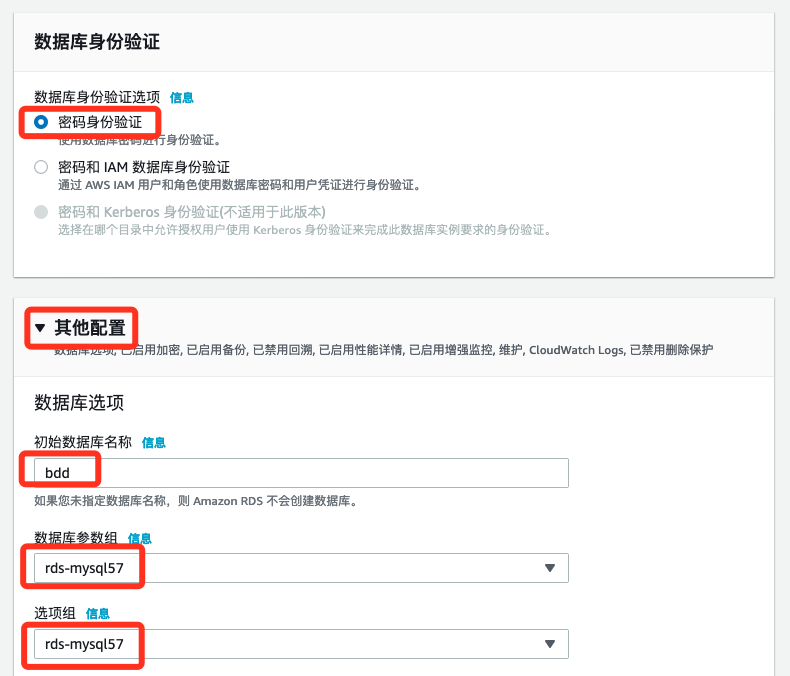
要数据库完全准备好，大概需要5分钟左右。
数据库准备好以后，点击数据库名字，出现连接和安全性页面，把对应的终端节点内容复制出来，此处为
bdd.cmyyzdtxltwq.ap-southeast-1.rds.amazonaws.com
如下图所示 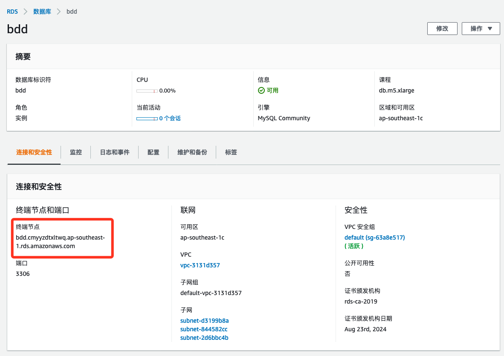
大家把如下sql下载到部署好的EC2客户端里面
然后登陆EC2客户端，安装mysql客户端
sudo yum install mysql -y
然后使用mysql客户端用如下命令登录数据库（紧接着需要输入密码）
mysql -h bdd.cmyyzdtxltwq.ap-southeast-1.rds.amazonaws.com -u admin -p bdd
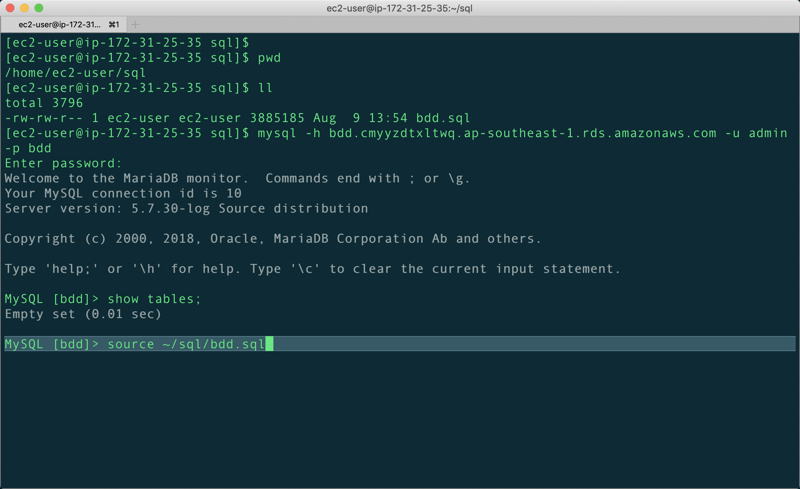
使用命令导入数据（如果上传和保存的目录不是 ~/sql/bdd.sql，记得同步修改）
source ~/sql/bdd.sql
然后检查数据库内容是否和截图匹配 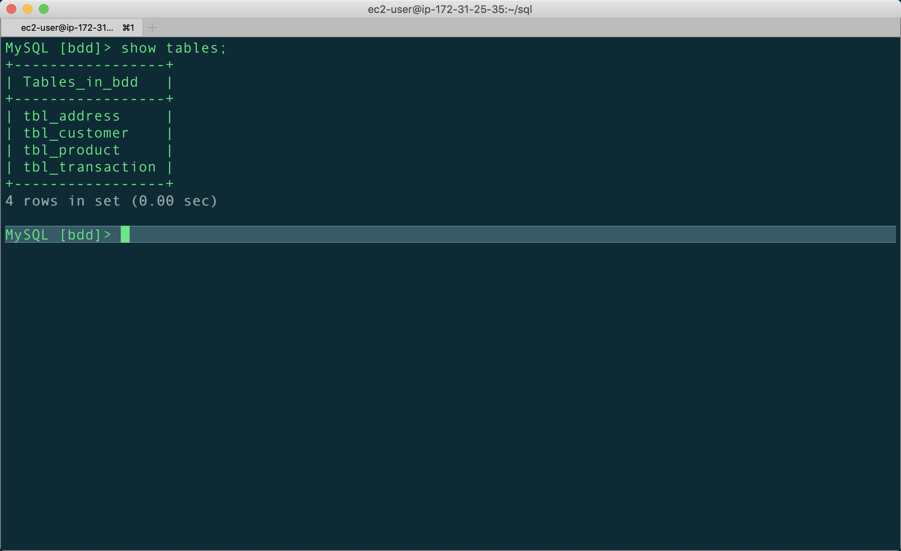
此处我们有4个表，内容分别如下
| 表名 | 内容 | 行数 |
|---|---|---|
| tbl_address | 客户地址信息表 | 1084 |
| tbl_customer | 客户表 | 1084 |
| tbl_product | 产品信息表 | 100 |
| tbl_transaction | 历史交易记录表 | 49874 |
恭喜你，已经完成第四步的实验准备工作。